Quels rapports entretiennent-elles ? - L3 CM
Cours :
‒ Apporter des connaissances générales et méthodologiques sur l’étude des relations entre émotion et cognition
Étudiant.e :
‒ Mettre en relation ces connaissances et un champ de recherche à choisir (e.g., vieillissement, apprentissages, développement de l’enfant, orientation)
‒ Sujet type cadre théorique dans une réponse à un AAP/ abstract (sans les résultats) en un nombre de mots donné
‒ Critères de réussite :
- Sélection et mise en lien de notions apprises en cours
- Fluidité et lisibilité de la rédaction
- Apports de sa recherche personnelle sur le sujet (lectures complémentaires)‒ Lemaire, P. (2021). Émotion et cognition: Série LMD. De Boeck Supérieur.
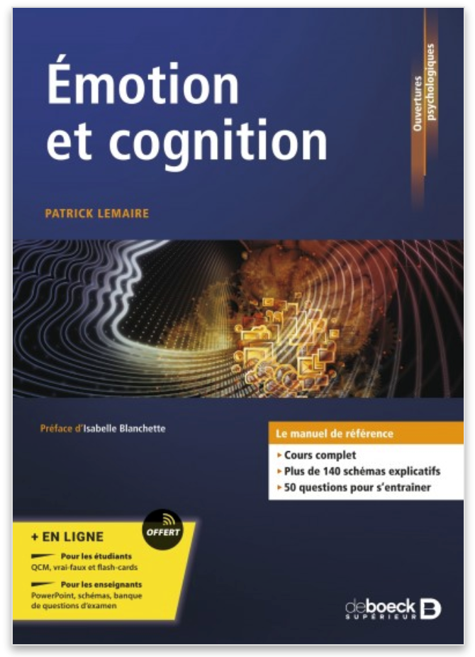
## Plan de la première partie du coursIntroduction => Quelles questions en psychologie sur le lien entre émotion et cognition ?
Définition des émotions => Modèles théoriques
Comment étudier le lien entre émotion et cognition ? => Que cherche-t-on ? => Induire l’émotion ou utiliser ses occurences naturelles => Induire l’émotion en dehors de la tâche ou par la tâche (incidentes vs. intégrales)
Rôle central
=> guident nos actions au quotidien
‒ Sciences cognitives et affectives
• Psychologie
• Linguistique
• Philosophie
• Sociologie
• Anthropologie
• Informatique
• Psychiatrie
‒ Depuis les années 80
Actes du colloque « Émotions et science : interactions », université de Nice (2020)
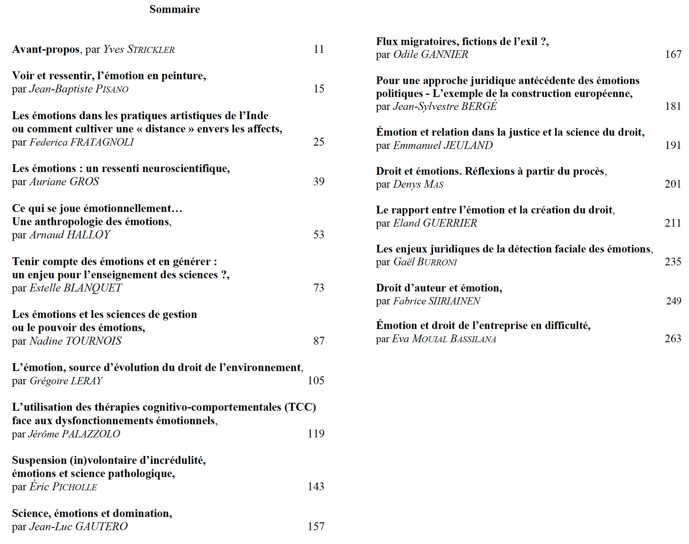
ou wooclap.com, code YNCKQT
‒ Comment sait-on si quelqu’un éprouve une émotion ? Comment sait-on quelle émotion il éprouve ? Qu’est-ce qu’une émotion ?
‒ Combien d’émotions fondamentales de base différentes existe-t-il ? Quelles sont-elles ? Comment faisons-nous pour distinguer entre plusieurs émotions ?
‒ Qu’est-ce qu’une émotion forte (ou intense) vs. une émotion moins forte ?
‒ Les émotions sont-elles universelles et innées (et présentes dans toutes les cultures) ou varient-elles selon la culture ? Idem pour l’expression des émotions ?
‒ Les femmes sont-elles plus émotionnelles que les hommes ? Les personnes jeunes ont-elles plus d’émotions, des émotions plus intenses que les âgés? Les émotions évoluent-elles au cours de la vie ? Certains individus sont-ils plus émotionnels que d’autres ? Comment le savoir ?
‒ Les animaux ont-ils des émotions ?
‒ Nos émotions sont-elles différentes lorsque nous sommes seuls à vivre un événement émotionnel et lorsque nous sommes avec un autre ou avec d’autres ?
‒ Comment formulons-nous nos jugements (discrimination, détermination, identification) émotionnels ?
‒ A quoi servent les émotions ? Pourrions-nous vivre sans émotion?
‒ Comment les émotionsinfluencent-elles nos performances cognitives?
Dans quel champ aimeriez-vous réfléchir à la question du lien entre émotion et cognition ?
Quels sont vos questionnements de chercheurs a priori ?
Si vous avez envie de partager vos questions : lien Wooclap
À comprendre dans cette partie de cours :
‒ Ce qu’est une émotion
‒ Comment étudier les émotions
‒ Comment, du point de vue méthodologique, étudier l’impact des émotions sur la cognition
Chacun sait ce qu’est une émotion jusqu’à ce qu’on lui demande d’en donner une définition. À ce moment-là, il semble que plus personne ne le sache.
Fehr & Russell (1984)
Multiples définitions mais points communs
‒ États internes observables ou non (comportements, expressions verbales ou faciales)
‒ S’accompagnent de réactions physiologiques (changement de fréquence cardiaque, transpiration, contraction des muscles …)
‒ Réponses psychologiques et/ou physiologiques d’intensité, de durée, de complexité variables à une situation
‒ Plusieurs types d’émotions
«Patrons biologiquement fondés de perception, d’expérience, de physiologie, d’action et de communication, caractérisés par leur aspect épisodique, de courte durée, et qui se produisent en réponse à des défis et opportunités physiques et sociaux spécifiques.»
(Keltner & Gross, 1999, p.468)‒ Un ensemble de réponses, d’intensité, de durée et de complexité variables qui s’expriment de manière plus ou moins publique/privée
‒ Différent de l’humeur ou des sentiments
‒ Terme chapeau « affects » :
- Émotions (e.g., colère, tristesse)
- Réponse au stress
- Humeur (dépression, euphorie) 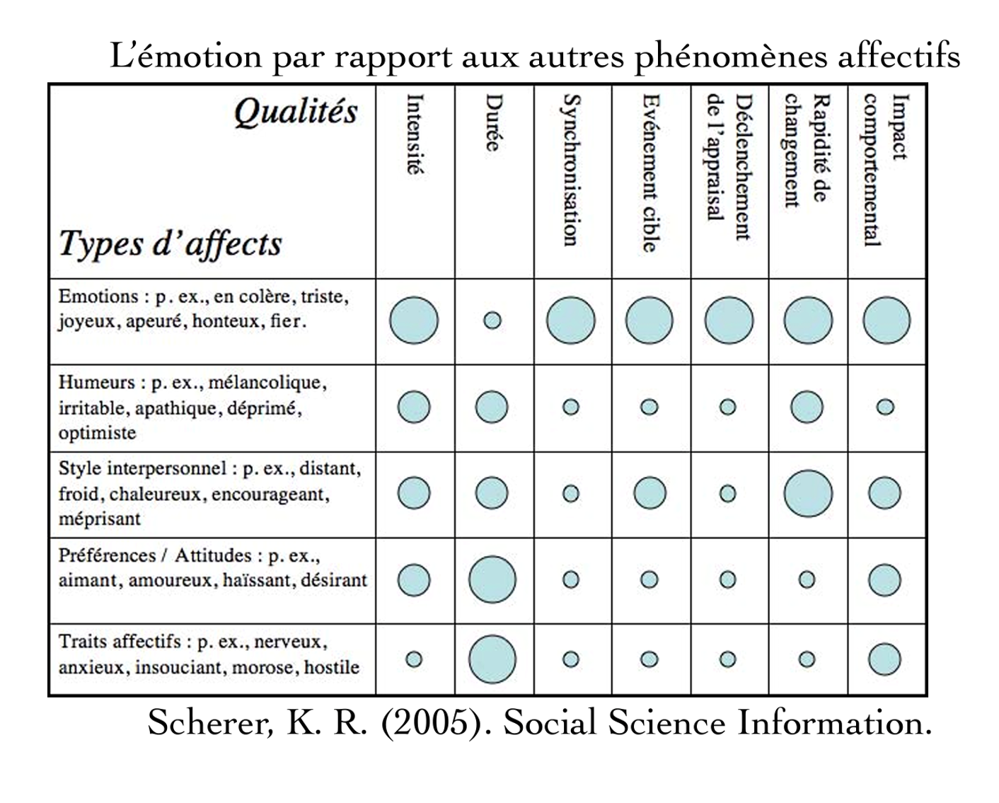
Quand l’émotion survient-elle ?
Nos émotions dépendent de la situation (évaluation cognitive), mais pas uniquement
Elles dépendent aussi de notre interprétation de la situation => Théorie de la ré-évaluation cognitive (Laarus, 1991; Scherer, Schorr & Johnstone, 2001)
notre évaluation mentale de la situation :
provoque les émotions
La ré-évaluation cognitive permet de changer volontairement son interprétation de la situation pour modifier l’émotion ressentie
Nature multi-dimensionnelle
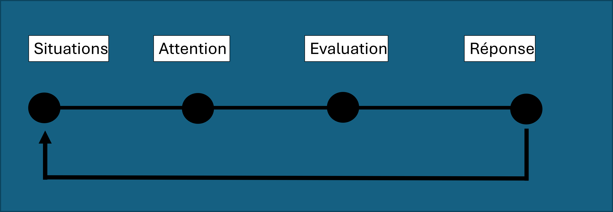
Barrett et al., 2007; Gross, 1998Processus dynamique en plusieurs étapes (!= d’un réflexe automatique)
montre où et comment peut intervenir la régulation émotionnelle
‒ Toujours en questionnement dans la littérature (Eckman, 1984; Averill, 1980; Scherer, 1984), voir Gross & Barrett (2011)
‒ Émotions de base
- joie, surprise,
- colère, tristesse, dégoût, peur‒ Émotions réflexives
- jalousie, envie (émotions comparatives)
- honte, culpabilité, embarras, fierté, orgueil (émotions d'auto-évaluation)‒ La valence : de négative à positive
‒ L’intensité : de faible à forte
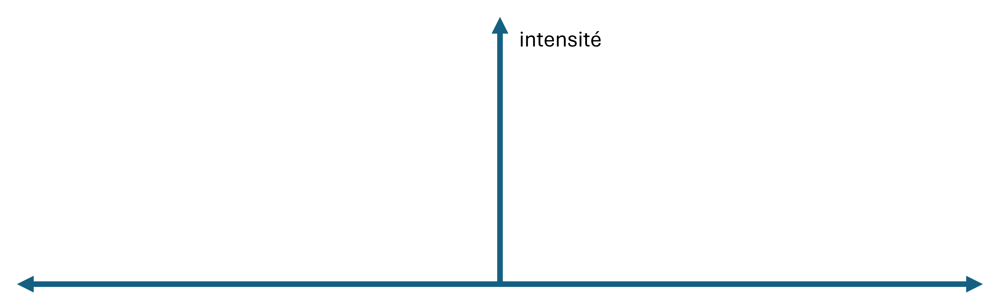
Valence5 questions
‒ Différences inter-individuelles mais les expressions psychologiques, comportementales et physiologiques des émotions présentent un profil général dans le développement typique
Colère
Tristesse
Joie
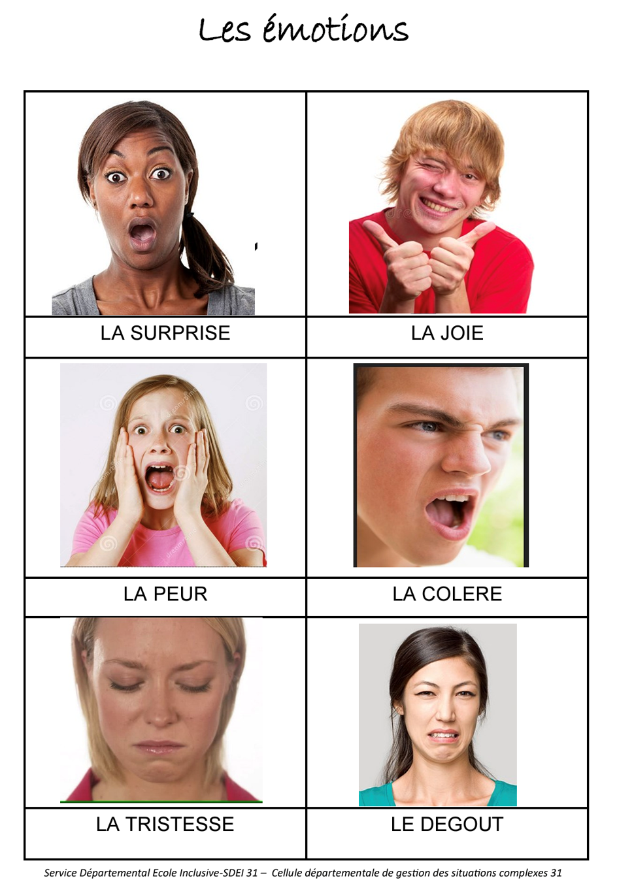
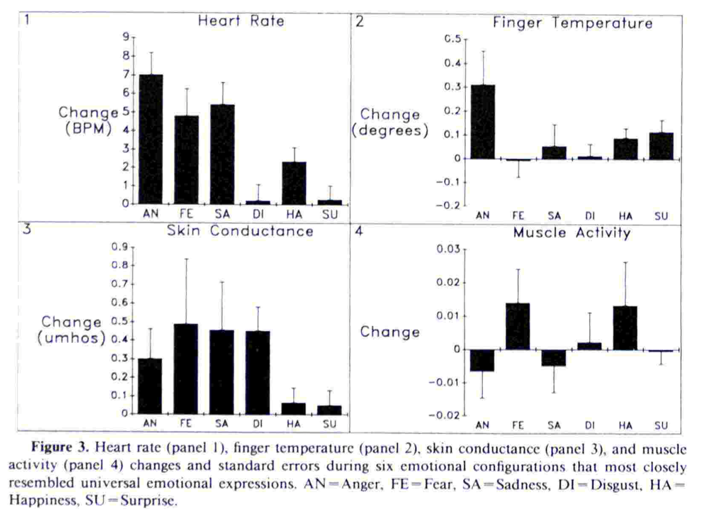
Questions déclinables pour chaque fonction cognitive
Réalisation d’une tâche cognitive connue
Dans une condition :
Comparaison des performances en fonction de l’état émotionnel du participant
Fox et al. (2007)
Photos du IAPS : pistolets, serpents, fleurs et champignons
images réelles dans l’expérimentation, les figures du diapo sont des illustrations
Consigne : Trouver si toutes les images sont les mêmes ou non dans chaque set
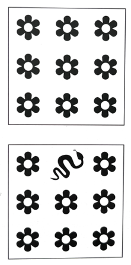
Que mesure-t-on ? Pourquoi ? lien WooclapRésultats
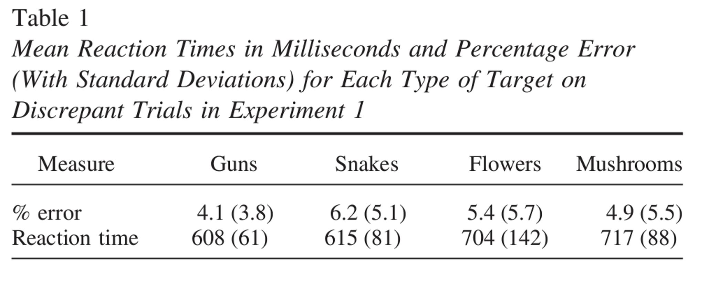
Manipulations expérimentales => induction
Occurrences naturelles
Exemple : OASIS
Kurdi, B., Lozano, S., & Banaji, M. R. (2017). Introducing the Open Affective Standardized Image Set (OASIS). Behavior Research Methods, 49(2), 457–470. https://doi.org/10.3758/s13428-016-0715-3
Pas d’effet de genre (une fois enlevées les images -18 explicites)
Effets négligeables de
1/ Manipulations expérimentales (induction)
Films (revue Gross & Levenson, 1995)
1/ Manipulations expérimentales (induction)
2/ pas de manipulation expérimentale – utilisation des occurrences naturelles
Journal (diary)
Différences inter individuelles (pathologies, phobies, anxiété chronique)
Évaluation par des questionnaires (DES, BMIS, PANAS, CMQ, EPI)
Utilisés pour évaluer l’état émotionnel du participant arrivant au labo
Et/ou pour vérifier l’état émotionnel après induction
Questionnaires d’évaluation émotionnelle
‒ DES : Differential Emotions Scale ou Echelle Différentielle d’émotions (Izard et al., 1974)
‒ BMIS : Brief Mood Introspection Scale (Mayer & Gaschke, 1988)
‒ PANAS Positive and Negative Affect Schedule – Echelle d’Affectivité Positive et Négative (Watson, Clark & Tellegen, 1988)
‒ CMQ : Current Mood Questionnaire, Questionnaire d’humeur du moment (Feldman, Barrett, & Russell, 1998)
‒ EPI : Emotional Profile Index (1988)
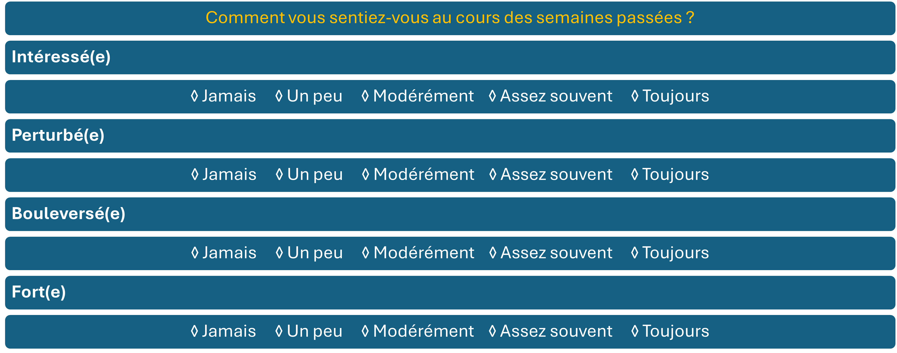
Différence entre
On parle d’émotions incidentes versus intégrales
Lemaire, P. (2022). Emotions and arithmetic in children. Scientific Reports, 12(1), 20702. https://doi.org/10.1038/s41598-022-24995-9
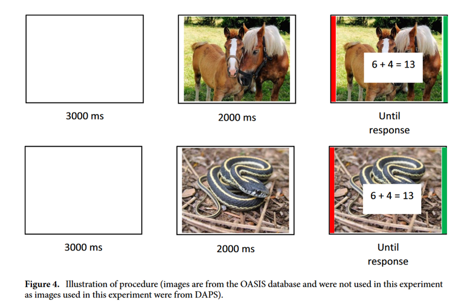
‒ Performances + faibles dans la condition émotion négative pour tous les groupes d’âge (RT + long)
‒ Effet délétère + important des émotions négatives sur les problèmes + difficiles (TRUE vs. FALSE)
‒ Baisse de l’effet des émotions avec l’âge de l’enfant
‒ Effet maximum de l’émotion sur les problèmes posés juste après le stimulus émotionnel
‒ Effet de médiation
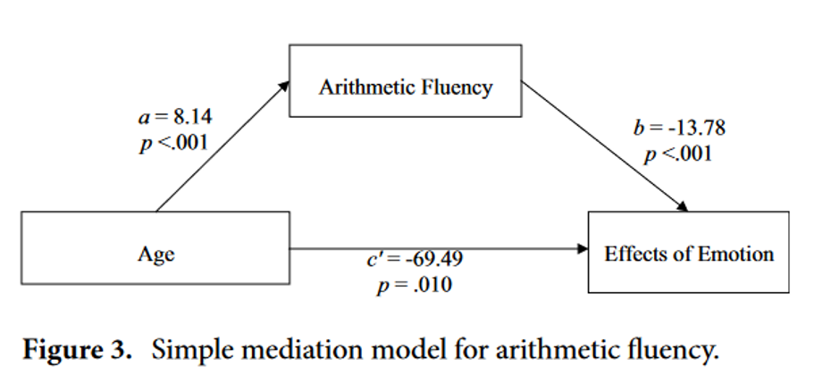
Conclusions
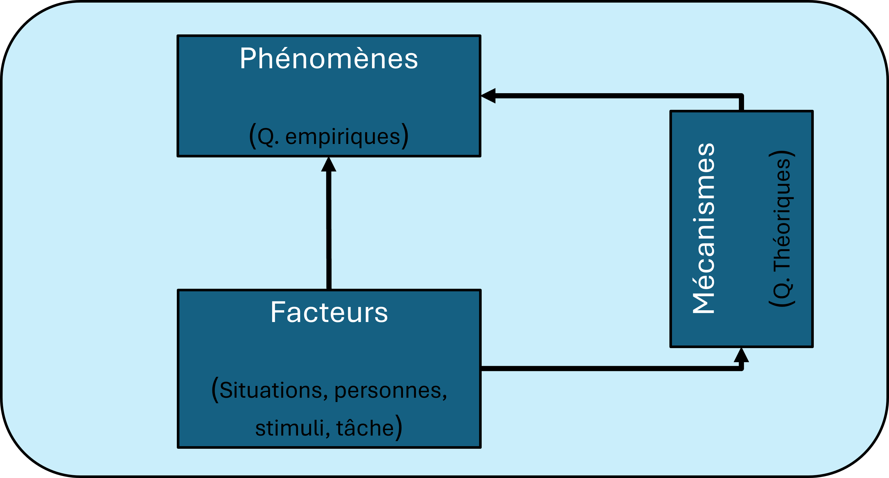
Attention intervient à toutes les étapes du traitement de l’information
Différents mécanismes dans l’attention
Attention soutenue
Attention sélective
Orientation de l’attention ou Flexibilité attentionnelle (shifting)
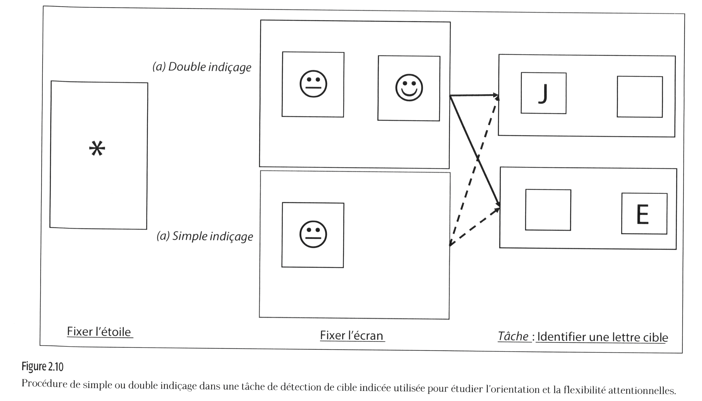
Attention partagée (ou divisée)
Attention préparatoire
Focus sur attention sélective, orientation de l’attention et attention divisée
Mais il existe des travaux pour d’autres fonctions attentionnelles
Méthodologie
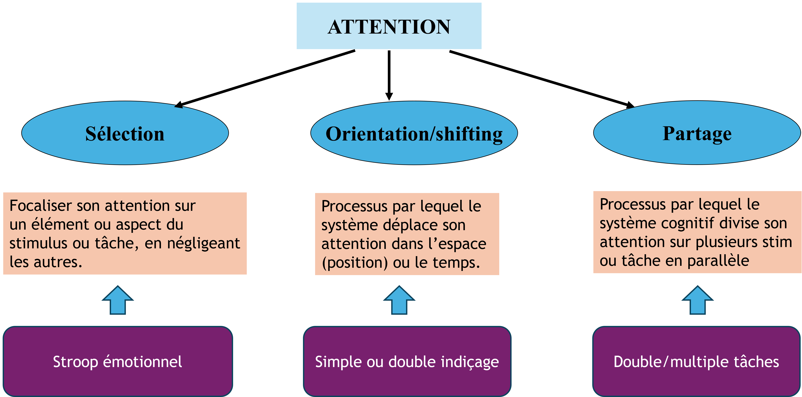
Les émotions ont-elles un effet sur nos capacités à sélectionner les éléments pertinents pour réaliser une tâche ?
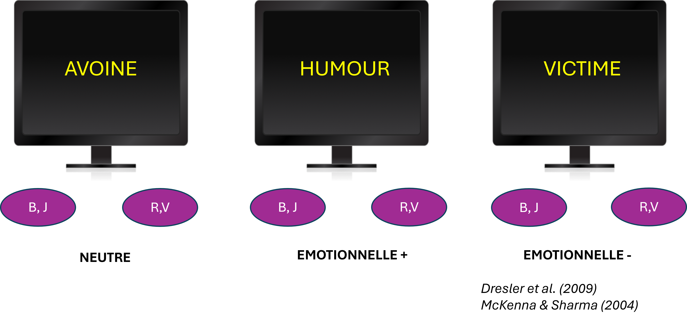
Dresler et al. (2009)
Effets stroop émotionnels
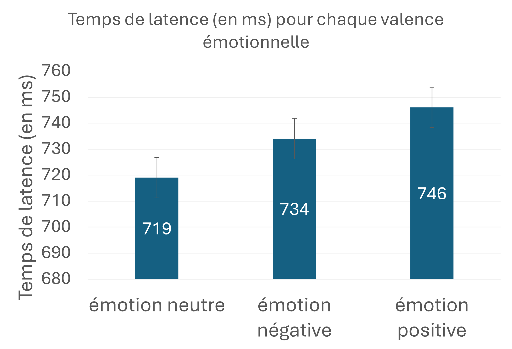
Effets stroop émotionnels plus forts en condition mixte (McKenna & Sharma, 2004)
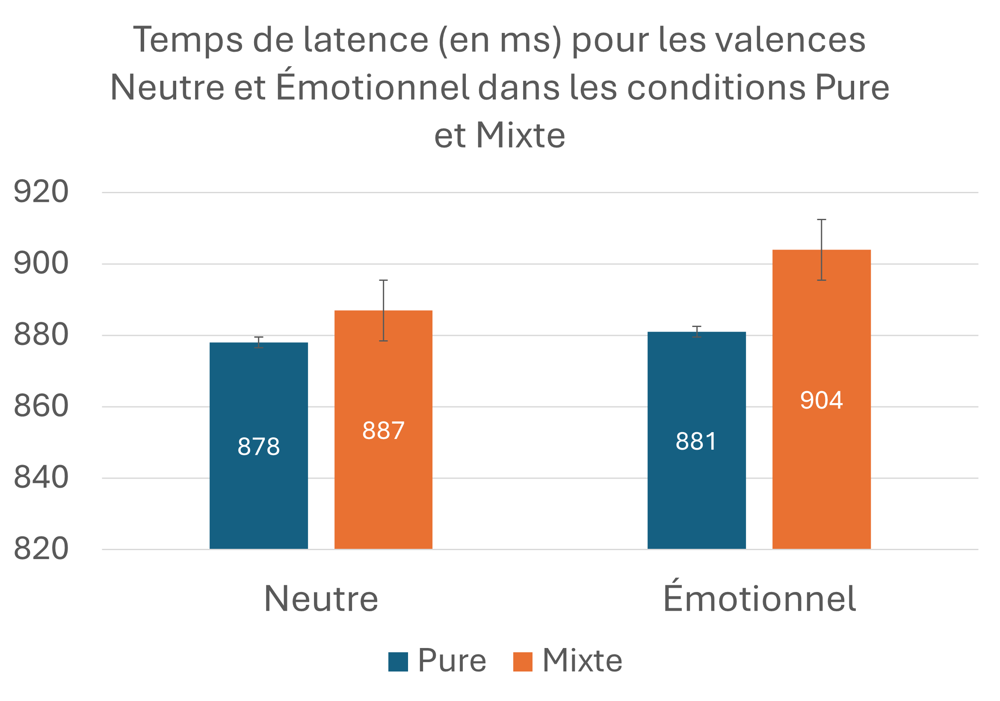
Beaucoup d’autres études, des réplications
Les émotions perturbent les mécanismes de l’attention sélective
L’activation des émotions et leur traitement occupent de la ressource attentionnelle
La tâche d’attention sélective est ralentie
Les émotions ont-elles un effet sur nos capacités à diriger notre attention sur une information cible dans notre environnement ou sur une dimension importante d’un stimulus à traiter ?
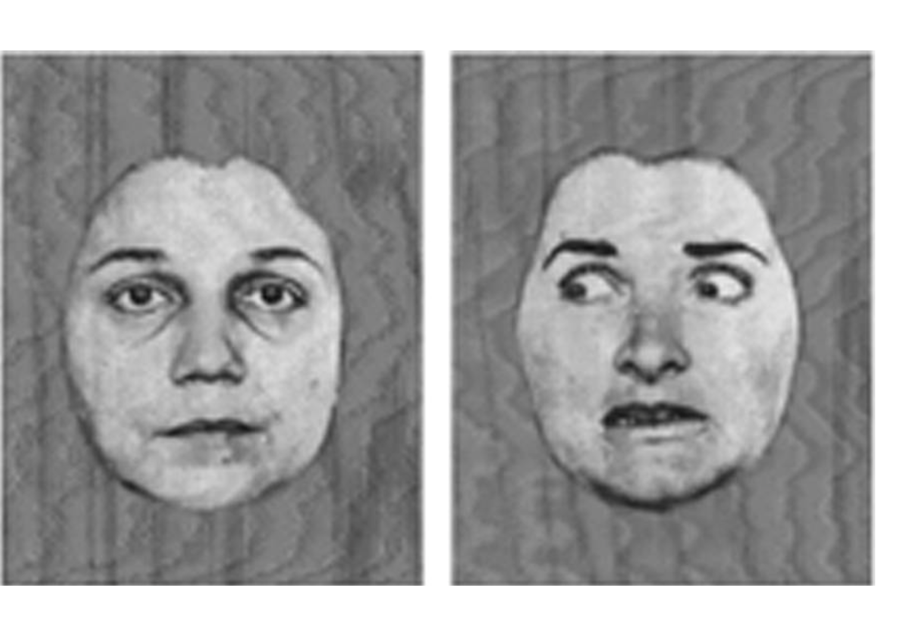
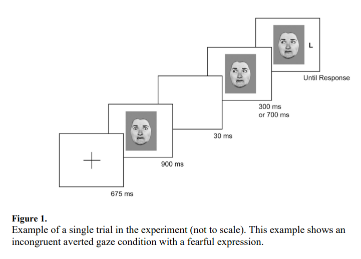
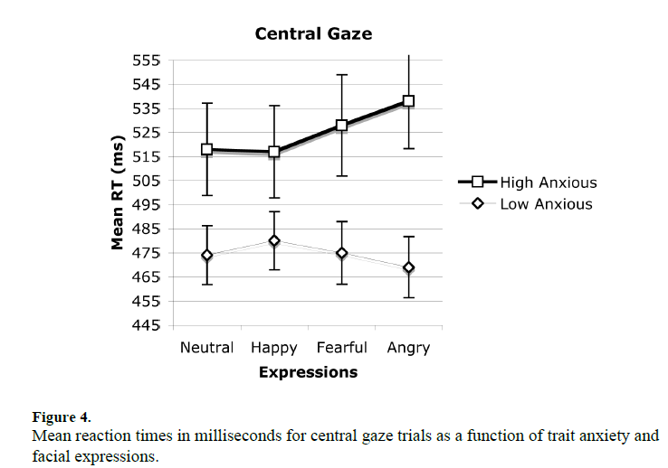
Pour les regards dirigés à droite ou à gauche :
Effet principal du SOA (temps d’exposition), F(1, 38)= 214.8, p <.001
Effet de la congruence mais interaction, alors on n’analyse pas l’effet principal mais les effets simples
Interaction Groupe x Expression émotionnelle x Congruence : F(3, 114)= 12.2, p <.001
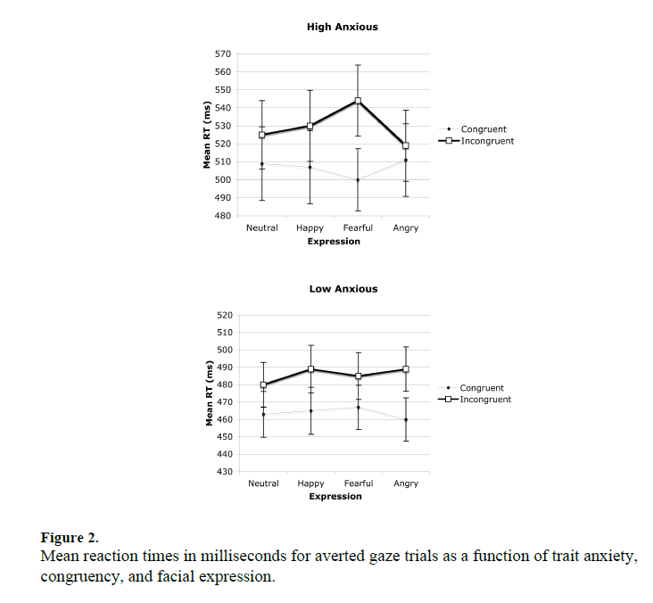
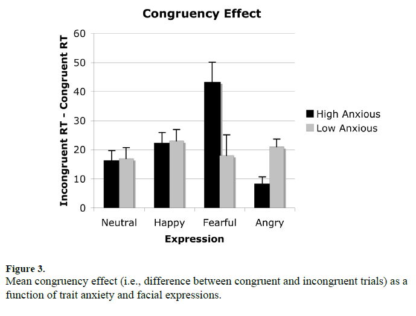
Regard central (vers le participant) : Les visages en colère ralentissent les réponses des participants anxieux -> retiennent davantage l’attention
Effet de la congruence => la direction du regard d’une autre personne a un effet sur l’attention de l’observateur
Interaction Congruence x Expression émotionnelle x Groupe
=> Variabilité interindividuelle dans l’orientation de l’attention
Si l’attention visuelle est automatique, elle est modulée par le caractère émotionnel des stimuli et des participants
Les émotions ont-elles un effet sur nos capacités à partager nos ressources attentionnelles ?
Martin & Kerns (2011)
2 conditions : émotion neutre/positive
Tâche de running span : séries de 12 à 20 chiffres entendues, rappeler les 6 derniers
Expérience 1 : en inter (between-subject)
Participants assignés à un groupe au hasard
Induction vidéo : 10 minutes (induction), puis 5 minutes (booster)
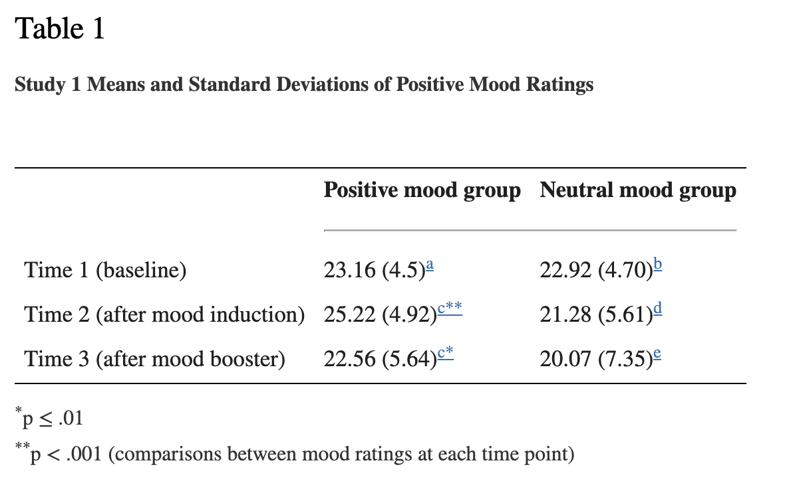
Expérience 1 : en inter (between-subject)
Le groupe + réussit moins bien la tâche de RMS
t(178) = 2.14, p < .05, d = .32
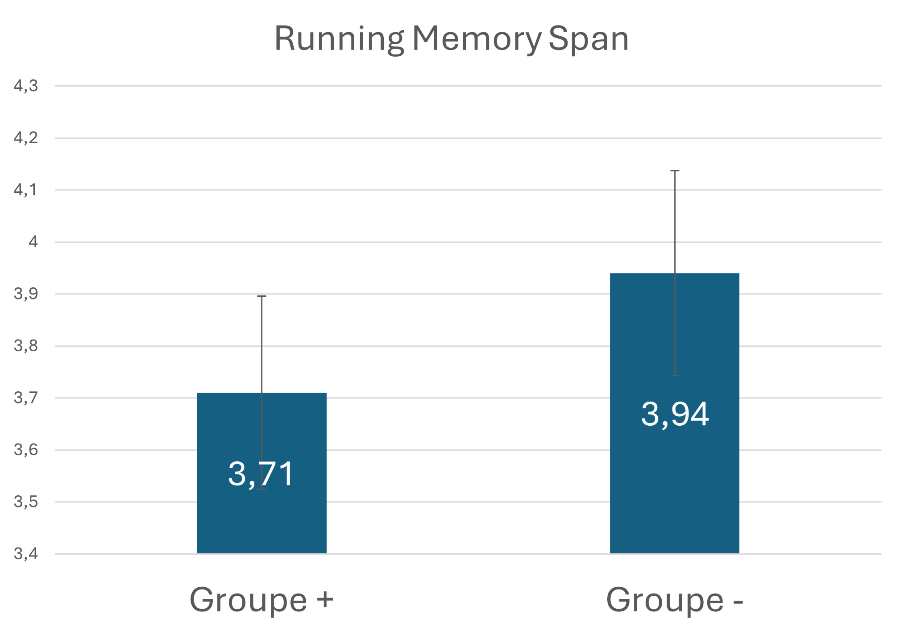
Expérience 2 : en intra (within-subject)
Le groupe + réussit moins bien la tâche de RMS
t(89) = 2.58, p < .011, d = .27
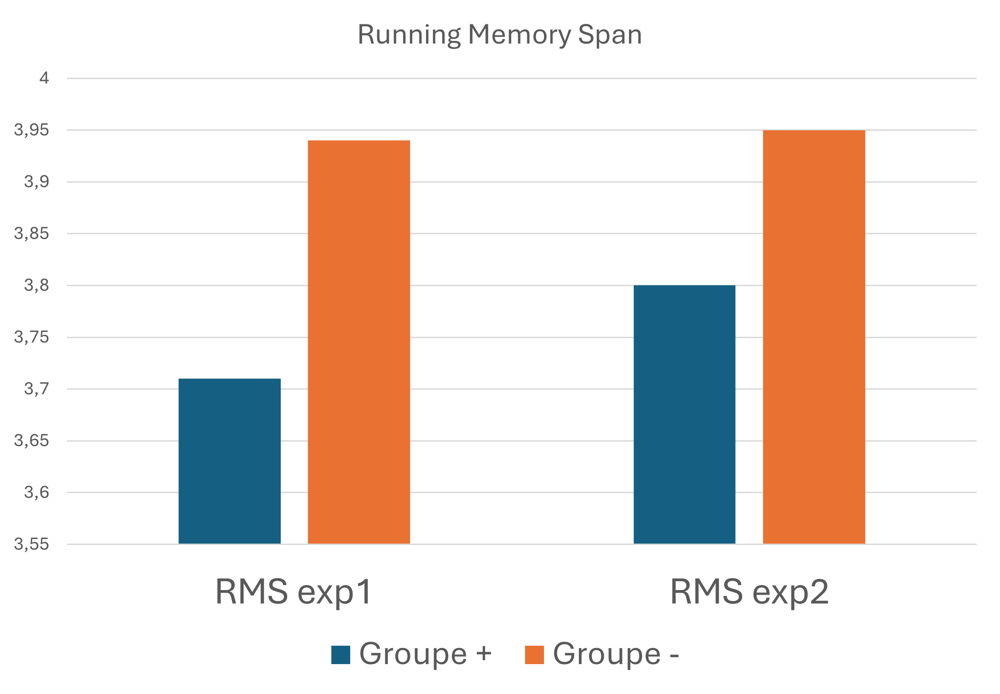
Shackman et al. (2006)
Tâche de N-back
Induction émotionnelle
Menace de choc
Tâche et induction en intra, contrebalancées
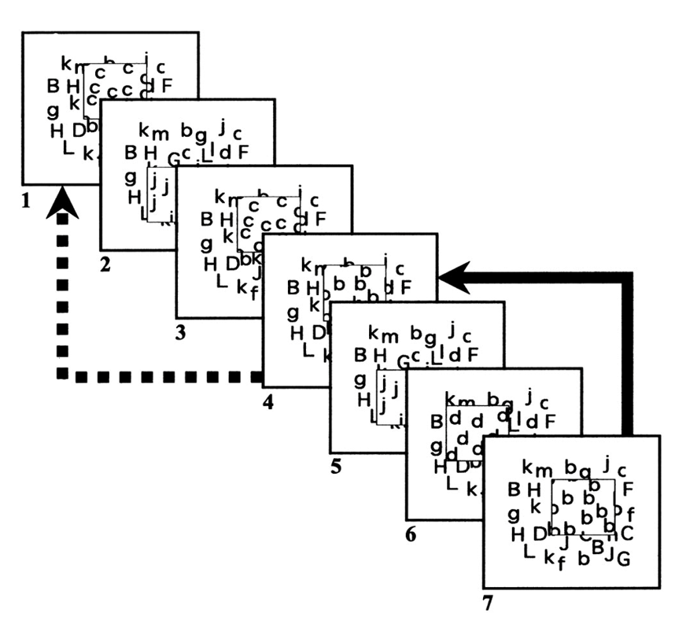
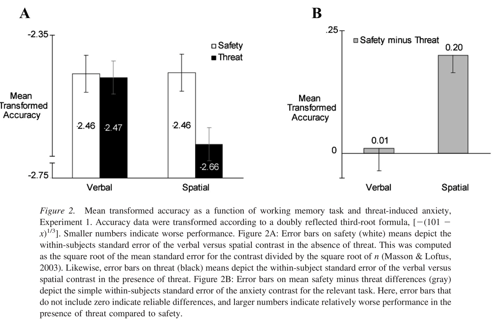
Menacés de choc électrique, les participants peuvent partager leurs ressources attentionnelles verbales aussi bien que sans menace
Mais leurs ressources attentionnelles spatiales sont négativement impactées
Hyp : gérer l’anxiété et ressources attentionnelles spatiales pourraient partager les mêmes réseaux cérébraux
Intérêt de la méthodologie de l’étude : différenciation des phénomènes observés
Attention sélective, orientation de l’attention, attention partagée, quels effets de l’émotion ?
Influence importante (+/-) des émotions sur l’attention
Nos émotions changent :
Mais on ne sait pas encore si c’est toujours le cas, et pour tout le monde
Fonctions du système attentionnel : s’orienter vers et sélectionner les informations pertinentes pour réaliser une tâche cognitive
Les émotions ont une influence parfois négative … au labo
Est-ce qu’efficacité attentionnelle au labo et hors labo sont les mêmes ?
L’optimisation des mécanismes attentionnels via les émotions n’est pas la même
Les émotions améliorent la mémoire
Les émotions dégradent la mémoire
Effets de congruence affective, de dépendance au contexte émotionnel et de trade-off
Effets d’amplification mnésique – quand les émotions améliorent la mémoire
Davidson et al. (2006)
Stimuli : mots neutres (e.g., foot, dustpan) / mots émotionnels (e.g., cash, rollercoaster)
Procédures :
Puis, surprise :
Rappel d’items
Rappel de la source : male/female ; violet/orange
Davidson et al. (2006)
Plus (+) de rappel des mots émotionnels
Pas de différence de rappel de la source
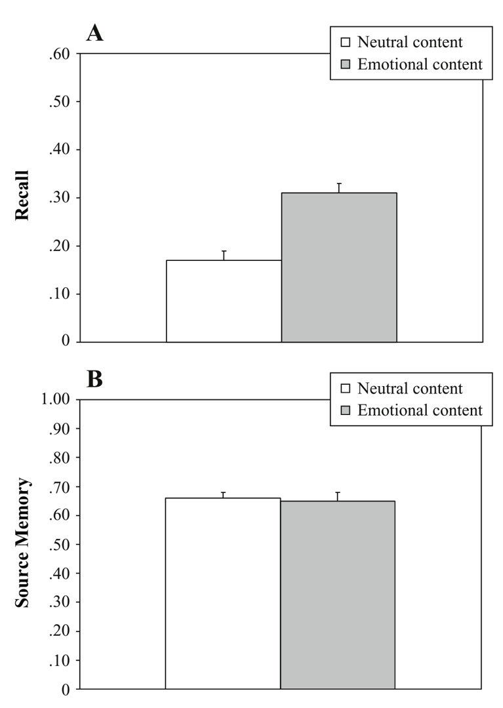
Cahill & McGaugh (1995)
Encodage : présentation de 12 diapos, un récit par diapo
2 conditions : diapo et récit neutres/ diapo et récit émotionnels
Regarder les diapos et écouter les récits :
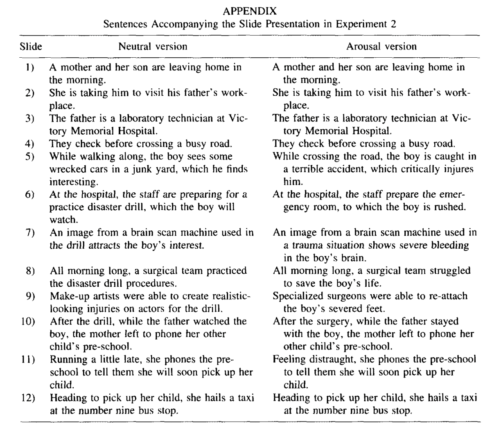
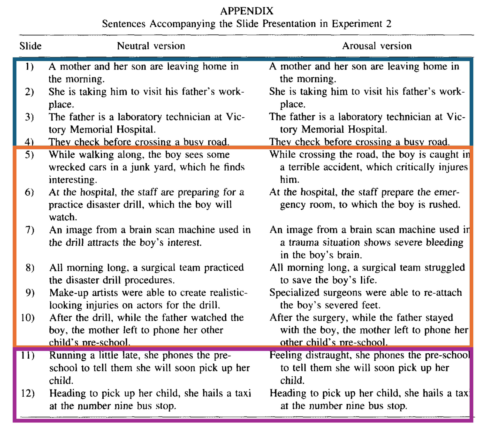
Cahill & McGaugh (1995)
2 semaines plus tard, surprise
Tâche de rappel libre
Tâche de reconnaissance
Meilleure mémorisation des éléments émotionnels
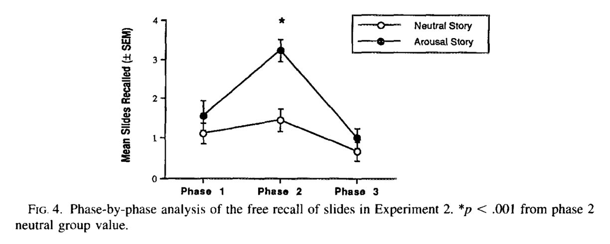
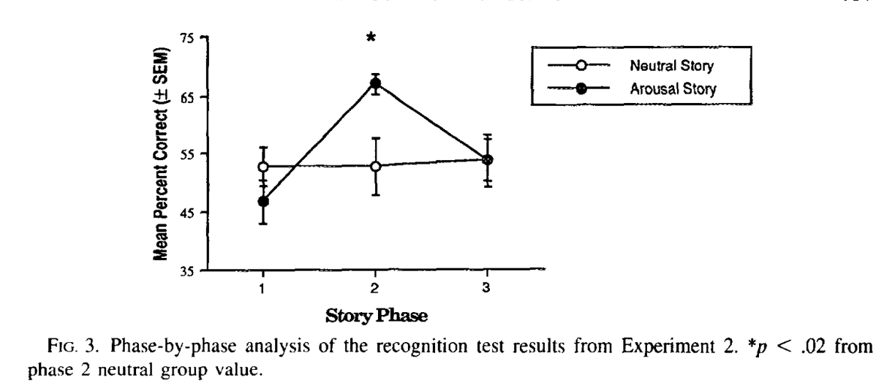
Si on regarde le détail des slides
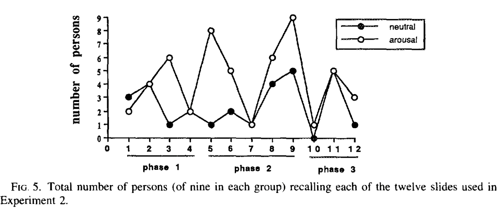
Guy & Cahill (1999)
Stimuli : 6 vidéos (2-3 minutes) émotionnelles et 6 vidéos neutres (intra)
2 conditions : ne pas en parler/ en parler à au moins 3 personnes (inter)
Tâches :
1/ Visionnage des vidéos et jugement émotionnel (0 à 10) 2/ Une semaine après, rappel surprise (rappeler le max de choses dont ils se souvenaient des 12 films)
Guy & Cahill (1999)
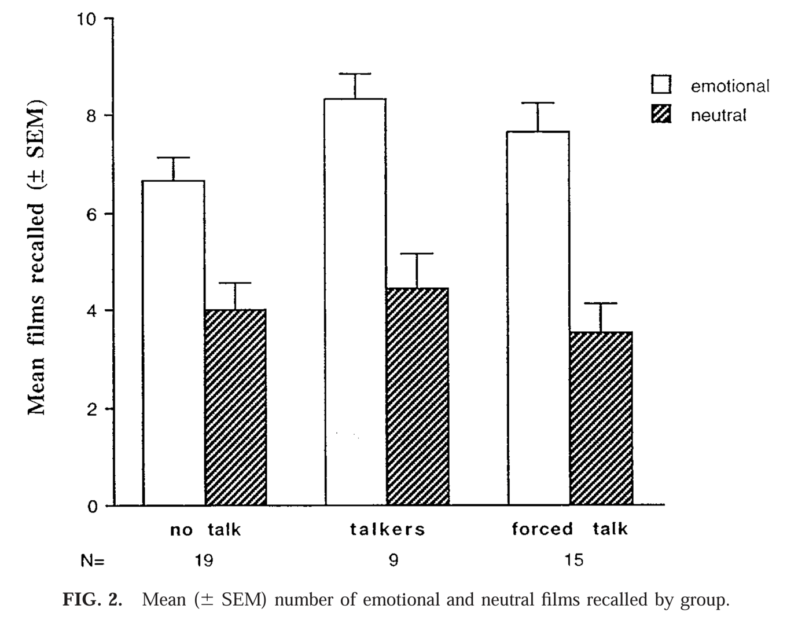
Situation émotionnelle : est-ce que le contexte des informations cibles est également mieux mémorisé ?
Parfois oui (Doerksen & Shimamura, 2001)
Parfois non (Davidson et al., 2006)
Comment expliquer ces différences ?
=> Bénéfice de l’émotion de l’information cible uniquement quand on demande au participant de se focaliser sur le contexte
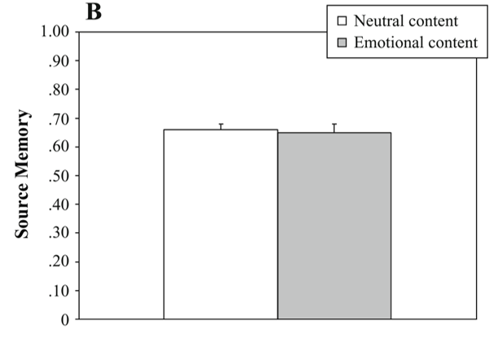
Effets de dégradation mnésique - quand les émotions dégradent la mémoire
Kuhlmann et al. (2005)
Encodage liste de 30 mots : 10 neutres, 10 positifs, 10 négatifs
Rappel immédiat – deux groupes équivalents
2 conditions
Tâche de rappel (différé)
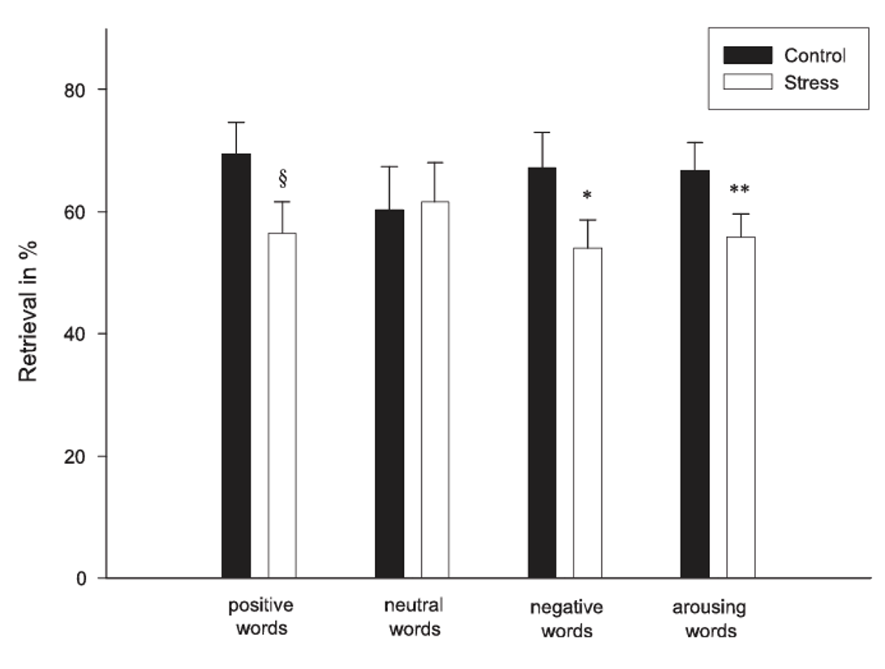
Effets délétères du stress sur les performances mnésiques robustes
MAIS des études montrent que le stress n’a pas d’effet délétère sur la mémorisation d’informations émotionnelles (e.g., Payne et al., 2006)
Les émotions améliorent les performances mnésiques/ les dégradent à d’autres moments
Méthodologie
Que se passe-t-il pour les performances mnésiques quand l’état émotionnel du participant et la valence émotionnelle du matériel sont étudiés conjointement ?
Valence émotionnelle des stimuli et état émotionnel des participants congruents
Est-ce qu’on rappelle plus d’informations tristes quand on est triste ?
Rappel de plus d’informations joyeuses quand on est joyeux ?
Est-ce que la congruence affective a un effet sur la mémoire ?
Bower et al. (1978, 1981)
2 conditions : état émotionnel joyeux/ triste (hypnose)
2 tâches
Informations rappelées positives et négatives
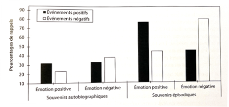
Notre mémoire dépend de notre état émotionnel
Notre mémoire dépend aussi de la valence émotionnelle du matériel
Influence séparée de notre état émotionnel et de la valence émotionnelle du matériel
MAIS aussi effet de la congruence affective
Miranda & Kihlstrom (2005)
3 conditions : état émotionnel joyeux/ neutre/ triste (induction musicale)
2 tâches
Rappel de souvenirs autobiographiques anciens/récents
Jugement de valence émotionnelle des souvenirs récupérés de -4 (très désagréables) à +4 (très agréables)
3 types d’événements rappelés : positifs, neutres, négatifs
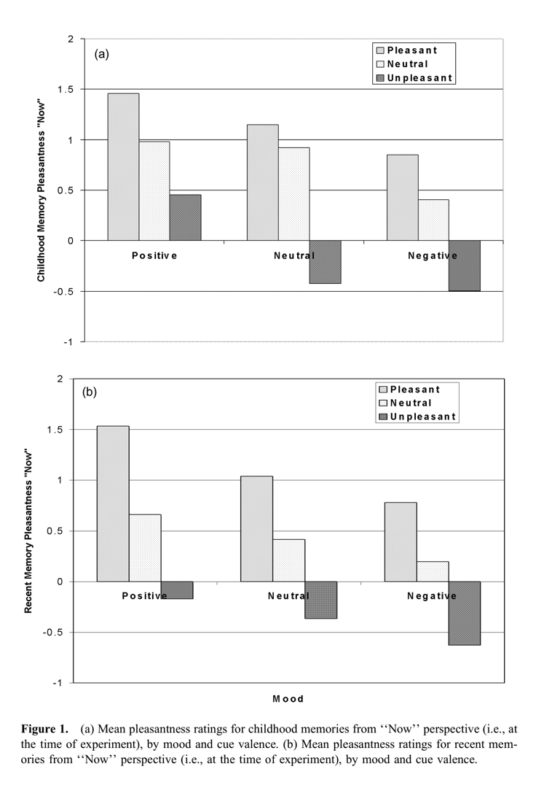
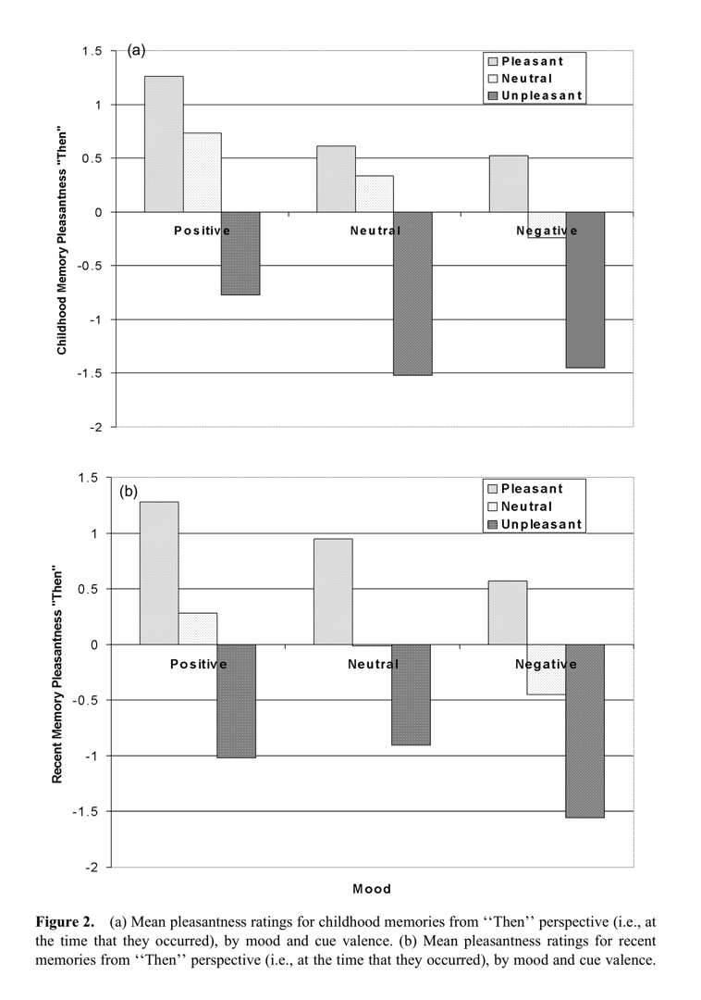
Les participants jugent + agréables les souvenirs + sous émotion +
Plus (+) désagréables les souvenirs – sous émotion –
Les souvenirs neutres sont jugés :
=> Effet de congruence affective sur le jugement de valence émotionnelle des souvenirs
Un état émotionnel – nous amène à encoder, à maintenir et à rappeler plus de souvenirs et d’informations négatives
On va juger ces informations et souvenirs comme encore plus négatifs
Dans un état de tristesse, les jugements et souvenirs tristes nous rendent tristes et nous maintiennent dans la tristesse
Cela fonctionne de la même façon pour la joie (récupération de souvenirs joyeux, jugés encore plus joyeux et maintien de l’état de joie)
Effets de contexte testés depuis longtemps en psychologie cognitive de la mémoire
Est-ce que le rappel est meilleur quand on ressent la même émotion pendant l’encodage et pendant la récupération en mémoire ?
Eich et al. (1994)
Lecture de mots inducteurs neutres/ induction musicale (joyeuse ou triste)
Récupération en mémoire des souvenirs choisis lors de l’encodage
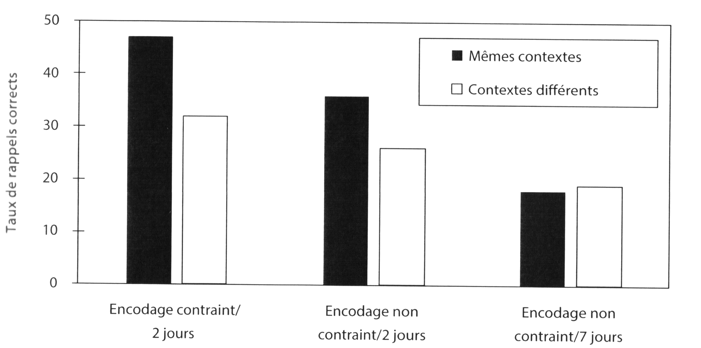
Lors d’une émotion forte (agression par exemple), on se souvient parfaitement de certaines informations et on en oublie d’autres
Sélectivité mnésique
Encodage prioritaire des informations directement liées à l’émotion (ex : arme)
Moins bon encodage des éléments périphériques
Kensigner et al. (2007)
Images avec un objet central dans un environnement neutre
Objet central
Chaque participant voit 64 images pendant 2s/image (exp1) ou 5s (exp2)
Tâche simple de jugement : approcheriez-vous de la scène ? (1-7 points)
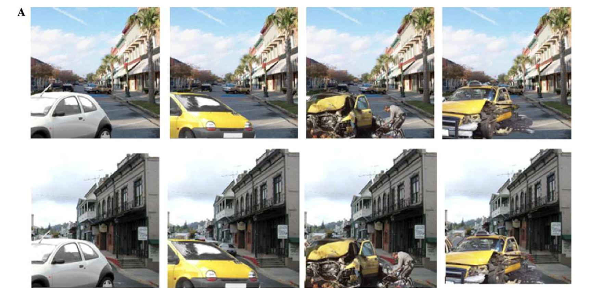
30 minutes après, tâche de reconnaissance
4 expériences
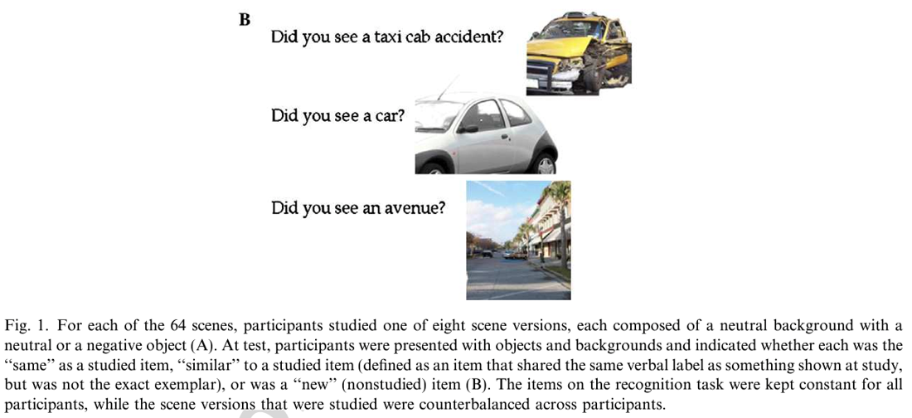
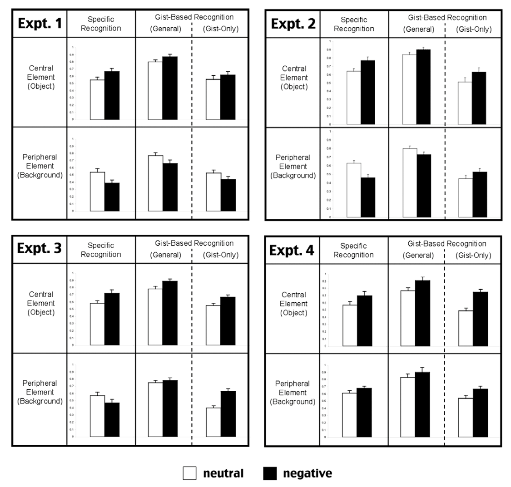
Objets centraux négatifs mieux reconnus que les objets centraux neutres
Exp 1, 2, 3 :
Exp 4 :
Pas d’automaticité du phénomène de trade-off
Les émotions modifient nos performances mnésiques
Effet de congruence affective entre l’encodage et le rappel
Effet tunnel : focalisation attentionnelle sur l’information émotionnelle qui dégrade la mémorisation des autres informations
Fait référence à l’influence de nos émotions ou de celles des autres
Gross (1998)
«processus par lesquels les individus influencent quelles émotions ils ressentent, quand ils ressentent ces émotions, et quelles expériences ils en ont, ainsi que comment ils expriment ces émotions» (p.275)
Repose sur un ensemble de mécanismes pour modifier :
Lorsqu’une émotion est évaluée
Que l’évaluation nous donne envie de modifier l’émotion
Émotion désagréable ou non appropriée à la situation ou à nos objectifs
Évaluation déclenche l’envie (ou le but) consciente ou non de la modifier
=> Mobilise une évaluation de l’évaluation
Coping
Régulation (ou réparation) de l’humeur
3 composantes (Gross, 2014) :
Ce que le participant essaie de réaliser
Ex : diminuer une émotion négative
Représentation cognitive d’un état émotionnel final
Activation d’un but pour modifier le déclenchement d’une émotion
=> Régulation intrinsèque (déterminée par l’individu) ou extrinsèque (déterminée par un agent extérieur)
Deux approches de la RE
Comment le participant essaie d’atteindre son but
Utilisation de processus pour modifier la trajectoire émotionnelle
Conséquences de la régulation émotionnelle
Impact de la stratégie de régulation émotionnelle sur différents indicateurs
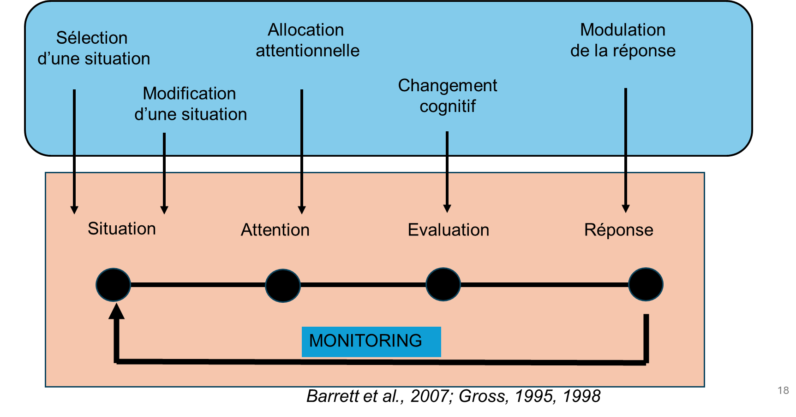
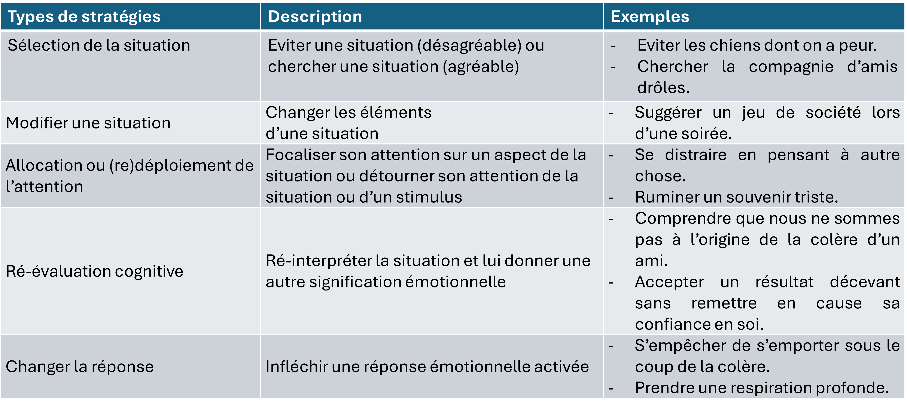
Quand utilise-t-on les stratégies de régulation émotionnelle ?
=> Variabilité de la fréquence de la stratégie en fonction
Études qui montrent comment l’utilisation des stratégies de régulation émotionnelle varie selon
Sheppes et al. (2011)
Cherchent à évaluer les choix stratégiques des participants pour réguler leurs émotions
Expérience 1
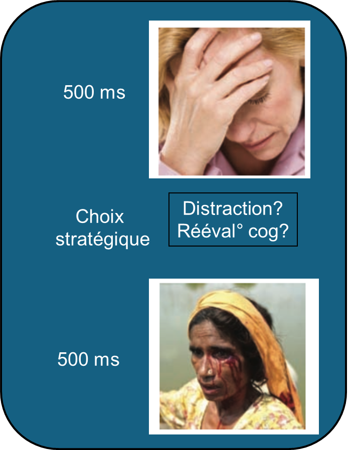
Sheppes et al. (2011)
Expérience 2
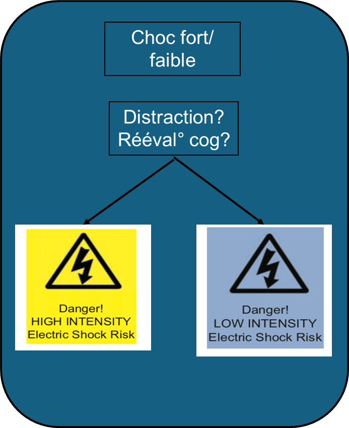
Choix de la distraction pour minimiser l’émotion négative sur une image à court terme
Choix de la ré-évaluation cognitive pour minimiser l’effet à long terme (ex : s’ils revoient l’image plus tard)
la stratégie de ré-évaluation cognitive est choisie
Elle permet un désengagement émotionnel plus efficace à long terme
Distraction : désengagement émotionnel à court terme mais fonctionne sur des émotions intenses
Études qui montrent comment l’utilisation des stratégies de régulation émotionnelle varie selon
Millgram et al. (2019)
Pourcentage d’utilisation des stratégies de rumination et de distraction en fonction du but émotionnel poursuivi sur des images tristes ou joyeuses
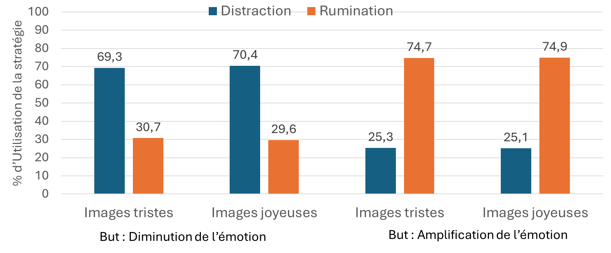
Ajustement de la stratégie par rapport au but émotionnel
Distraction pour réduire l’émotion
Rumination pour amplifier l’émotion
pour les émotions positives comme négatives
Comment étudier le lien entre émotions et cognition ?